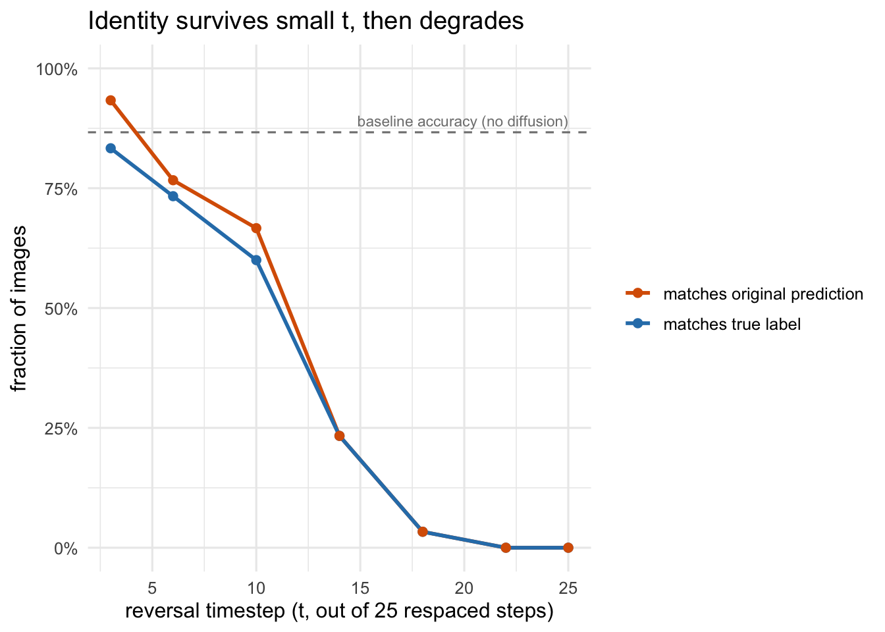
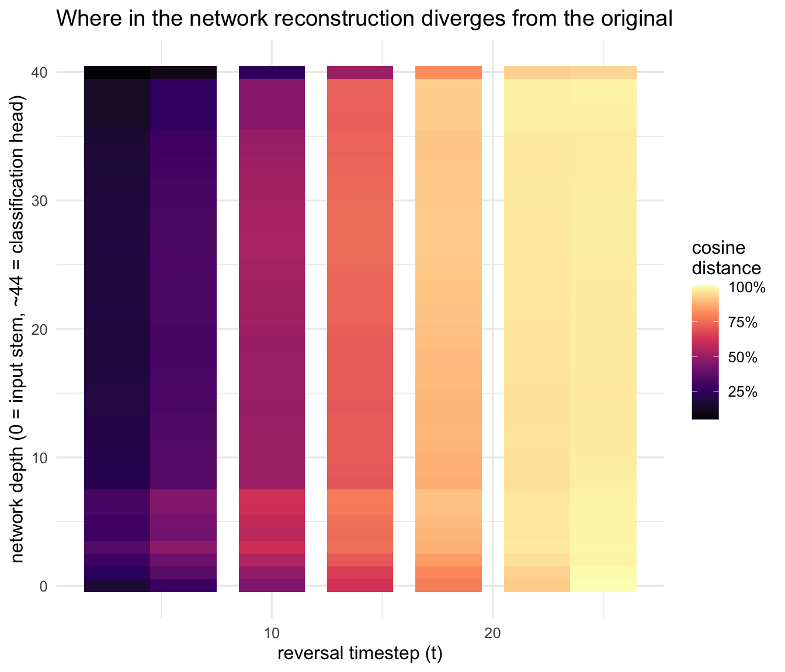

Sclocchi, Favero and Wyart’s A Phase Transition in Diffusion Models Reveals the Hierarchical Nature of Data(Sclocchi, Favero, and Wyart 2024) makes a simple, sharp claim about how diffusion models generate images. Take a real image, run the forward noising process partway to some timestep \(t\), then run the backward (denoising) process the rest of the way back to \(t=0\). If \(t\) is small, you get back almost exactly the image you started with. If \(t\) is large, you get a plausible image of the same rough kind but with different fine details. The paper’s finding is that the switch between these two regimes isn’t gradual — it’s a genuine phase transition, and it happens at different noise levels for different levels of an image’s hierarchy (fine texture destabilizes first, then object parts, then overall semantic class).
This post reproduces that experiment end to end: real pretrained weights, real ImageNet-derived images, run locally on a Mac (Apple Silicon, no CUDA) rather than the multi-GPU cluster the paper used. The code lives in forward-backward-diffusion, the paper’s own release — I had to fix a couple of bugs in it and add Apple GPU (MPS) support to get it running here; the how and why of that is at the bottom of the post.
Scaling it down to run on a laptop
The paper’s own experiment uses OpenAI’s 256×256 unconditional ADM diffusion model over the full ImageNet-1k validation set (1000 classes, 10 images each), resampled to 250 diffusion steps, swept across the full 0–250 range of reversal points. Doing that on a single Mac would take a very long time, so this reproduction keeps every piece of the pipeline real but turns the dials down:
So: same model, same classifier, same underlying mechanism, real (if smaller) ImageNet-derived data — just a coarser grid and a tenth-scale image set, sized to finish in about 20 minutes on a laptop instead of hours on a cluster.
Where does the class identity break?
For each reversal point \(t\), we forward-diffuse every starting image to \(t\), denoise it back to a clean image, and ask ConvNeXt-Base what class it thinks the result is — then compare that to what it originally said about the untouched image. sample_correct and start_correct track agreement with the true (Imagenette) label; pred_unchanged tracks whether reconstruction preserved the classifier’s own original prediction, which is the more direct read on “did the reverse process preserve identity” independent of whether the classifier was right to begin with.
summary_by_t <- accuracy_by_t |>group_by(step_reverse) |>summarise(sample_correct =mean(sample_correct),pred_unchanged =mean(pred_unchanged),.groups ="drop" ) |>pivot_longer(c(sample_correct, pred_unchanged), names_to ="metric", values_to ="fraction")baseline_acc <- baseline$accuracy_top1[1] /100ggplot(summary_by_t, aes(step_reverse, fraction, color = metric)) +geom_hline(yintercept = baseline_acc, linetype ="dashed", color ="grey50") +annotate("text", x =max(summary_by_t$step_reverse), y = baseline_acc,label ="baseline accuracy (no diffusion)", vjust =-0.6, hjust =1,size =3, color ="grey50") +geom_line(linewidth =1) +geom_point(size =2) +scale_y_continuous(labels =percent_format(), limits =c(0, 1)) +scale_color_manual(values =c(sample_correct ="#2C7FB8", pred_unchanged ="#D95F02"),labels =c(sample_correct ="matches true label", pred_unchanged ="matches original prediction") ) +labs(x ="reversal timestep (t, out of 25 respaced steps)",y ="fraction of images",color =NULL,title ="Identity survives small t, then degrades" )

Figure 1: Classification agreement after forward-backward diffusion, as a function of the reversal timestep. t=0 is a no-op (perfect reconstruction); higher t means more of the diffusion trajectory is re-randomized before reconstruction.
A hierarchy of breakdown, layer by layer
The more interesting view is inside the classifier. Every image gets pushed through ConvNeXt-Base twice — once as the original, once as the forward-backward reconstruction — and we compare activations at every one of its ~45 internal layers, from the earliest convolutional stem (depth 0) to the final classification head (depth ≈44). If the paper’s hierarchical story is right, shallow layers (fine texture) should start diverging at small \(t\), while only the deepest layers (semantic class) diverge at large \(t\).
cosine_by_depth_t <- activation_diff |>filter(metric =="cosine") |>group_by(step_reverse, depth) |>summarise(cosine_distance =1-mean(value), .groups ="drop")ggplot(cosine_by_depth_t, aes(step_reverse, depth, fill = cosine_distance)) +geom_tile() +scale_fill_viridis_c(option ="magma", labels =percent_format()) +scale_y_continuous(breaks =pretty_breaks()) +labs(x ="reversal timestep (t)",y ="network depth (0 = input stem, ~44 = classification head)",fill ="cosine\ndistance",title ="Where in the network reconstruction diverges from the original" )

Figure 2: Mean cosine distance (1 - cosine similarity) between original and reconstructed activations, by network depth and reversal timestep. Warmer = more disrupted. A hierarchy would show the disruption front moving from shallow layers (bottom) to deep layers (top) as t increases.
Figure 3: The same data as a line plot: a handful of representative depths, cosine distance vs. t.
Seeing it directly
Numbers aside, the clearest evidence is just looking at the images. Below, each row is one starting image; each column is the reconstruction after forward-backward diffusion at an increasing reversal timestep. At small \(t\) the reconstruction is nearly pixel-identical to the original. At larger \(t\), fine texture is the first thing to change, followed eventually by pose, composition, and — at the largest \(t\) we tested — occasionally the object itself.
Figure 4: Original (leftmost column) vs. forward-backward reconstructions at increasing t.
What actually broke in the code, and how I fixed it
The paper’s released code isn’t quite runnable as committed, and separately, nothing about it was written with Apple’s MPS backend in mind. Four fixes were needed:
A broken relative import.guided_diffusion/image_datasets.py did from ..datasets.imagenet_classes import IMAGENET_CLASSES, a relative import that reaches outside the installed guided_diffusion package. It fails immediately with ImportError: attempted relative import beyond top-level package — every one of the repo’s three custom scripts imports this module, so nothing in the repo could run at all. Fixed by making datasets its own installable package (setup.py) and importing it absolutely.
Two sampling methods that don’t exist. The actual forward-backward experiment script calls diffusion.p_sample_loop_forw_back and diffusion.ddim_sample_loop_forw_back — methods that appear nowhere in gaussian_diffusion.py, and never have, across the entire git history. I implemented both, as variants of the existing p_sample_loop_progressive / ddim_sample_loop_progressive that start the reverse process at a given timestep instead of at pure noise.
float64 on MPS._extract_into_tensor moved the diffusion schedule’s coefficients — stored as float64 numpy arrays — directly onto the compute device. MPS doesn’t support float64 at all, so this crashed on first use; fixed by casting to float32 before the device transfer.
torch.distributed collectives on an MPS tensor. The scripts use dist.all_reduce/all_gather (inherited from the original multi-GPU design) even for a single-process laptop run. Those collectives run over the gloo backend here (no CUDA means no NCCL), and gloo only understands CPU tensors — so the handful of tensors that cross a collective call needed to be routed to CPU rather than MPS, while leaving NCCL’s CUDA path untouched for the cluster case.
None of this changes the paper’s method — it’s the same forward-then-partial-backward diffusion process, the same classifier, the same activation-comparison logic. The fixes just make the released code actually executable, and executable somewhere other than a CUDA cluster.
References
Sclocchi, Antonio, Alessandro Favero, and Matthieu Wyart. 2024. “A Phase Transition in Diffusion Models Reveals the Hierarchical Nature of Data.”arXiv Preprint arXiv:2402.16991.